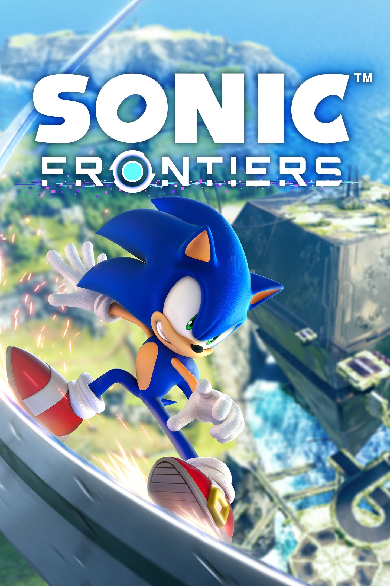

Sonic The Hedgehog (em português, Sonic o Ouriço) é o personagem principal da franquia de videogames de mesmo nome. O primeiro jogo a estrelar o personagem foi Sonic The Hedgehog (também conhecido como Sonic 1) lançado em 23 de junho de 1991 para o console Sega MegaDrive/Genesis.
Sonic The Hedgehog (em português, Sonic o Ouriço) é o personagem principal da franquia de videogames de mesmo nome. O primeiro jogo a estrelar o personagem foi Sonic The Hedgehog (também conhecido como Sonic 1) lançado em 23 de junho de 1991 para o console Sega MegaDrive/Genesis.
O jogo foi desenvolvido por uma subdivisão da empresa de entretenimento japonesa SEGA, chamada Sonic Team, que tinha o objetivo de criar uma mascote que superasse o Super Mario da Nintendo, empresa que na época dominava o mercado de jogos e consoles domésticos. O design do personagem e sua atitude rebelde foram atributos intencionais para destacar o Sonic dos outros jogos da época, além de servir como a imagem na qual SEGA gostaria de ser lembrada. Também era muito importante que o personagem fosse apelativo ao público ocidental, em especial o estadunidense, para permitir que a SEGA se expandisse pelo globo.
Nesse jogo, Sonic The Hedgehog tem o objetivo de derrotar o Dr. Eggman (ou Dr. Ivo Robotnik, na versão americana) em seu objetivo de dominar o mundo. O doutor estava encapsulando os animais em máquinas, criando um exército de robôs. Sonic decide libertar os animais e acabar com os planos de Eggman utilizando as Esmeraldas do Caos, gemas com poder transcendental e misterioso, para restaurar a natureza local e salvar o dia.
O jogo foi um sucesso devido a sua jogabilidade e estilo icônicos e inovadores. Sonic The Hedgehog 1 mistura os gêneros de plataforma 2D com físicas de “pinball”, criando uma experiência única onde o relevo do terreno influencia no seu movimento, permitindo que loops e rampas impulsionassem o personagem para altas velocidades. A partir daqui Sonic teve a fama de ser o personagem mais rápido do mundo.

 No ano seguinte foi publicado Sonic The Hedgehog 2, introduzindo um novo personagem: a raposa de duas caudas Tails The Fox. Este foi o jogo que iimpulsionou a franquia, sendo um extremo sucesso global que colocou de fato o nome Sonic The Hedgehog no mapa.
No ano seguinte foi publicado Sonic The Hedgehog 2, introduzindo um novo personagem: a raposa de duas caudas Tails The Fox. Este foi o jogo que iimpulsionou a franquia, sendo um extremo sucesso global que colocou de fato o nome Sonic The Hedgehog no mapa.
O personagem secundário Tails também iniciou uma tendência na franquia, na qual novos personagens seriam criados a cada lançamento de um jogo. Seu sucesso deriva bastante de sua história, além do design carismático. No jogo, Tails era zombado pelas outras raposas pois ele tinha duas caudas e era considerado defeituoso. Um dia ele conheceu Sonic, que o incentivou a confiar em si mesmo independente dos que os outros dissessem. Quando Sonic foi embora e voltou a correr, Tails percebeu que conseguia alcançá-lo se girasse suas caudas como uma hélice. Assim, os dois se uniram para derrotar o Dr. Eggman em sua próxima invenção.
A partir daqui a franquia Sonic The Hedgehog continuou a evoluir e testar novas ideias, criando jogos únicos e histórias memoráveis. Porém, após uma sequência de más decisões da SEGA na chamada Guerra dos Consoles (na qual Nintendo, SEGA, Microsoft e Sony competiam entre si para serem a maior empresa de videogames dos anos 90 e 2000), a empresa teve que sair do ramo de consoles domésticos e focar apenas em desenvolvimento de jogos.
Foi um momento histórico, especialmente quando Sonic Adventure 2 Battle foi publicado para o console Nintendo Gamecube, e quando Sonic foi elencado para ser um dos personagens jogáveis de Super Smash Bros. Brawl. Ambos os acontecimentos declararam que as empresas SEGA e Nintendo já não eram mais rivais, e entraram numa era de colaboração que foi benéfica para a franquia.

 Porém, no ano de 2006, a história do personagem mudou de rumo. Um jogo chamado simplesmente Sonic The Hedgehog (conhecido popularmente como Sonic 2006 ou Sonic ‘06) foi publicado para Xbox 360 e PS3. O marketing de pré-lançamento foi colossal, prometendo uma reinvenção da franquia em um jogo inovador.
Porém, no ano de 2006, a história do personagem mudou de rumo. Um jogo chamado simplesmente Sonic The Hedgehog (conhecido popularmente como Sonic 2006 ou Sonic ‘06) foi publicado para Xbox 360 e PS3. O marketing de pré-lançamento foi colossal, prometendo uma reinvenção da franquia em um jogo inovador.
Devido à má gestão de funcionários e prazos impossíveis, Sonic 2006 foi lançado em um estado de desenvolvimento e com muitas falhas. O jogo foi considerado um dos piores jogos de todos os tempos, e as expectativas dessa reinvenção foram completamente destruídas. Muitos fãs de longa data perderam a confiança na SEGA, e Sonic passou a ser considerado uma piada pela crítica. Por pouco, a história de Sonic não acabou aqui.
Apesar do cenário crítico, Sonic Team continuou a fazer jogos estrelando o personagem. Os jogos mudaram drasticamente de tom e jogabilidade, buscando uma nova base para sustentar a série. Sonic Unleashed (2008), Sonic Colors (2010) e Sonic Generations (2013) recuperaram a fama da franquia, especialmente o último, que tinha o objetivo de homenagear aos jogos clássicos e modernos do ouriço azul.
Atualmente, o jogo Sonic Frontiers (2022) está se tornando o maior sucesso de vendas de toda a história de Sonic, e The Murder of Sonic The Hedgehog tem uma das maiores notas de avaliação que a franquia já viu.
Sonic teve diversos altos e baixos em sua jornada, mas os desenvolvedores e fãs sempre continuam a acreditar em seu potencial, e essa dedicação é o que mantêm a franquia viva até hoje.
